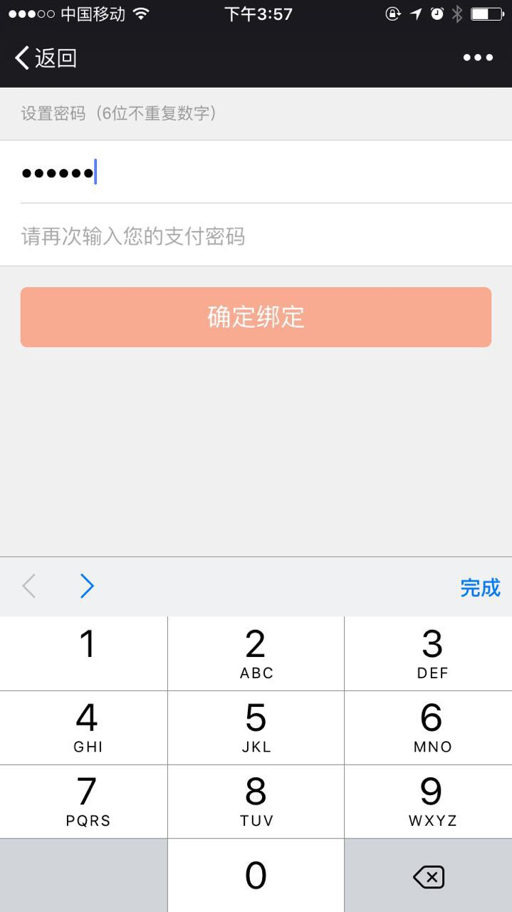
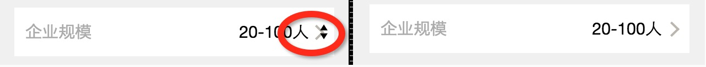
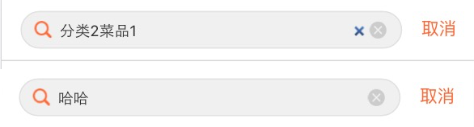

移动开发相关
页面从缓存中拿onpageshow
后退键在安卓和ios上的表现不同，安卓的后退键会默认地把页面刷新一次。然而ios则会从页面的cache中拿取页面，而不会再次执行js代码，导致了一些问题。解决办法是通过给window绑定onpageshow，然后判断event.persisted，如果是从缓存中拿取的，就location.reload一下，就会重新执行一下页面的js了。
window.onpageshow = function(event) {
if (event.persisted) {
location.reload();
}
};
锁住整个页面不让滑动
讲道理的话，给body一个overflow:hidden就行了
.fix-scroll{
position: absolute;
width: 100%;
height:100%;
overflow:hidden;
}
但是移动浏览器安卓2.3对于锁住滑动支持的不好
所以完美的解决在于，body和html都加上上述的类就行了
移动端不用placeholder
placeholder本身浏览器的支持还是不错的，但是如果想控制placeholder的属性，::-webkit-input-placeholder支持的就不好了
于是使用替代的data-placeholder
然后在div中添加以下代码
&::after {
content: attr(data-placeholder);
display: block;
position: absolute;
top: 50%;
right: 10px;
.transform(translateY(-50%));
white-space: nowrap;
font-size: 15px;
color: @color-text-grey;
z-index: -1;
}
&.has-value::after {
display: none;
}
通过切换has-value就可以切换展示与否了
安卓2.3不支持react,使用ES5-shim
因为安卓2.3对于es5的属性不能完全的支持，而react里面用到了bind，freeze等等es5才支持的属性，所以直接使用，会挂。
直接在页面上引入了es5-shim.js 和 es5-shim.min.js这两个js就搞定了。代码地址
功能是让那些对es5支持的不好的浏览器可以使用es5的特性。
安卓2.3对于空格符的支持
必须得写成 ，如果不加分号安卓2.3会不识别，其他都识别的
安卓2.3在input获得焦点的时候会有黄色边框
加上这个属性就可以搞定了
input:focus{
-webkit-tap-highlight-color:rgba(0,0,0,0);
}
安卓2.3拿到domain需要拼装一下
一般的只需要location.origin就可以拿到了，但是安卓2.3需要location.protocol + '//' + location.host这样才能够保证兼容性。
genomotion小bug
测试轮询ajax刷新状态的，结果genomotion的模拟器居然同样的请求不重新请求，导致一直是失败的状态，坑爹的模拟器
ios隐身模式下禁用localstorage
处理localstorage的地方用try catch包裹住，防止js报错从而卡住了页面
display:flex的注意点
这个很神奇，让元素拥有自动扩展和收缩的能力，非常好用，注意里面的子元素都必须是block的，否则android下面会有问题
align-items:center
这个属性是与display:flex配合使用的，是用来垂直方向上的居中对齐的，很好用，是用来在flex中替代vertical-align:middle的。
注意安卓机器只能识别为display:-webkit-box，这时得加上 -webkit-box-align:center;才行！！！！
而且iphone 7版本(5s)的得加上-webkit-align-items:center;
ios input自带的border-radius和阴影背景
这样可以去掉
border-radius: 0px;
-webkit-appearance:none;
transform 使用百分比进行动画在安卓低版本版本下会有bug
参见例子zepto_onepage_scroll,这个网站在低版本4.1的三星下是有问题的，因为在translate3d时用了百分比，最后改了代码，使用了px作为单位就正常了
fixed父元素的子元素想使用zepto来控制hide和show，结果4.1的三星就没有效果了
解决方法直接在父元素上调用hide或者show，或者给子元素也加上fixed属性就行了
输入密码的同时唤起数字键盘
<input type="password" pattern="[0-9]*" >
这样在ios下可以完美的唤起数字键盘，并且输入会被掩码盖住，部分安卓机下有效

安卓机下去掉select元素的上下的那个小符号
使用-webkit-appearance: none;

字体被透明化
把背景的opacity去掉，然后background-color改为background:rgba(0, 0, 0, 0.7)，这个会比较好用，手机上的兼容性不错，上图的左边为优化过的，不被透明化了。
input输入框右侧出现的小叉叉

css
//IE下
input::-ms-clear { display: none; }
//chrome内核
input::-webkit-search-cancel-button{
display:none;
}
fixed属性在小键盘弹出的时候失效
我们有时把input的搜索框fixed在页面上，然后在手机的小键盘弹出时，fixed属性会失效，我们的解决办法可以把整个页面变成竖向的flex布局。